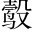

宣公夏濫於泗淵濫，漬也。漬罟於泗水之淵，以取魚也。，裡革魯大夫。斷其罟古。而棄之罟，網也。陡然驚人。，曰一面斷一面說，所以下有「公聞之」字。:「古者大寒降，土蟄發大寒以後，蟄蟲始振，孟春也。，水虞於是乎講罛姑。罶柳。，取名魚，登川禽，而嘗之寢廟，行諸國人，助宣氣也水虞，掌川澤之禁令。講，習也。罛，大網也。罶，笱也。名魚，大魚也。川禽，鱉蜃之屬。是時陽氣起，魚陟負冰，故既取以祭，復令民各取以薦，所以佐陽氣之升也。○第一段，言魚取之有時。。鳥獸孕印。，水蟲成春時。，獸虞於是乎禁罝嗟。羅，矠錯。魚鱉以為夏槁考。，助生阜也獸虞，掌鳥獸之禁令。罝，兔罟。羅，鳥罟。矠，刺取也。魚乾曰槁。阜，長也。禁取鳥獸之具，所以佐其生長也。○第二段，獸虞卻矠魚鱉是賓。。鳥獸成，水蟲孕夏時。，水虞於是乎禁罝作罜。音主。䍡六。，設阱鄂，以實廟庖，畜功用也罜䍡，小網也。鄂，柞格，所以誤獸也。廟，享祖宗。庖，燕賓客。畜，儲也。魚鱉為民日用之需，非鳥獸比，故曰「畜功用」，不但「助生阜」已也。○第三段，水虞卻設阱鄂是主。。且夫山不槎茶。櫱岸入聲。，澤不伐夭，魚禁鯤鮞而。，獸長掌。麑䴠迢。，鳥翼寇。卵，蟲舍蚳池。蝝延。，蕃庶物也槎，斫也。櫱，斫過樹根傍復生嫩條也。草木未成曰夭。鯤鮞，魚子也。麑，鹿子。䴠，麋子。翼，成也。生哺曰，古之訓也，未乳曰卵。蚳蝝，蟻子，可為醢。蕃，息也。○第四段，草木鳥獸魚蟲，連類並舉，是賓主夾寫。。今魚方別孕總一句，與「古者」應。下緊入「今」字。，不教魚長別於雄而懷子。，又行網罟，貪無藝也生者又未大。。」
公聞之曰：「吾過而裡革匡我，不亦善乎美里革。！是良罟也，為去聲。我得法言此斷罟最善，乃代我得古人之法。○兼美斷罟，驚變為喜，妙。。使有司藏之，使吾無忘諗審。○諗，告也。言是罟不可棄，使我見罟不忘裡革之言。○斷罟藏罟，涉想俱佳。。」師存侍師，樂師，名存。，曰：「藏罟不如置裡革於側之不忘也結語深雋有味，使好名之主意消。。」
述古訓處，寫得賓主雜然，具有錯綜變化之妙；入今事，只「貪無藝也」四字是極諫意。宣公聞諫，私心頓釋。師存進言，意味深長。正堪並美。